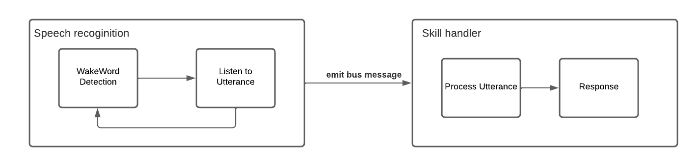

Why Mycroft?
Mycroft is open-source. This is a big advantage for us, since it allows more room for customization.
This perfectly allgins with our goals to listen and analyze the surroundings constantly.
MyCroft does not require proprietary hardware, which allowed us to run it on any of our laptops and even Raspberry Pis.
Furthermore MyCroft already is a functional voice assistant, thus saving us a lot of time and effort.
These were our reasons for choosing MyCroft over other voice assistants like ALEXA or Google Assistant.
For more information about MyCroft have a look at their homepage
First Skill
We wanted to evaluate the user and their behaviour. Our first step was to recognize insults and decrease the social score of the user.
Our idea was to create a skill and invoke it whenever the user utters an insult. With the MyCroft framework we were able to create such
skill very easily. Now everytime the user uttered an insult after saying "Hey Mycroft!" the users' score got decreased.
The next step was to recognize insults in usual requests, without disrupting the normal functionality of MyCroft.
We solved this by passing every utterance to our "Judge-Alexa-Skill" and checking if any insult could be found before
continuing with the normal precedure. Should the score of the user fall below a certain threshhold, our service would deny the request
and tell the user to increase his score.
Constant Listening

The most important feature to bring out the "dark" aspect for this seminar is the constant listening. We made MyCroft listen
to every noise it picked up. The first challenge was to bypass the wakeword detection, which was required for MyCroft to
process utterances. MyCroft records small audio chunks in a very short interval. These are added to a queue of a fixed length.
Now for every interval MyCroft evaluates the queue and checks if a wakeword was found. At that time our solution was to
only listen for a fixed amount of time and if no wakeword was found we would process the utterance regardless. The problem
with that implementation was that the normal functionality of MyCroft was compromised by a lot. As you can see in the diagram above
MyCrofts speech recoginition module normally waits for a wakeword and then records an utterance. The utterance gets converterd to text
and then sent over to the skill handler via the message bus, which is used for communication between modules (messages are sent asynchronously).
In the aforementioned implementation the speech recoginition component only waits for the wakeword for our fixed amount of time and continues to
send an utterance. These steps are repeated in a very short interval, since it is not waiting for speech. The issue that arises is our skill handler
which cannot process all of these utterances, because it discards the current utterance when a new one is received.
We needed to find a way to only record at times when the user was speaking to reduce the number of emitted messages. For this we used the noise level of the surroundings.
MyCroft was still recording chunks, but not to process utterances but to adjust the current noise level. When the sound level of
a chunk exceeded a threshhold depending on the current background noise level we started listening for the wakeword. Again, after our
fixed amount of time, we proceeded to record an utterance regardless of a wakeword being said.
We didn't want MyCroft to respond to requests that did not include the wakeword, because these are requests that are not directed at it.
To differentiate between these requests in the skill handler we emit an additional message over the bus, that tells the skill handler if
a wake word was found. With that we were able to even process dialog that is not directed at MyCroft while preserving the core functionality.
Tasks
Sentiment
GPT3
Voice Cloning